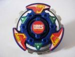

Advance Averazer
| Advance Averazer | |
|  | |
| Number: | MA-09 |
|---|---|
| System: | HMS |
| Type: | Balance |
Contents
| Languages: English|français|italiano |
Bit Protector (BP): Heavy Metal Emblem
The Bit Protector of this Beyblade is Heavy Metal Emblem. It is the first mould verson of Bit Protectors.
Attack Ring (AR): Advance Balancer
- Weight: 15 grams
This attack ring has a gear shaped metal sub-ring. This subring has a perfect circle form, able to mantain good defense. The gear shape makes it very good for stealing spin. It is able to steal spin almost perfectly. The ABS caul has 3 wings, about the same diameter as the metal subring. The three small spikes between these wings have very little effect on the AR. Advance Balancer has quite good balance due to its form. It can be seen as an upgrade from the Metal Saucer (Gaia Dragoon MS) attack ring- although it uses the same Metal Frame, the ABS caul has been designed with two small slots underneath to secure it and prevent rattling.
Another advantage is weight. This AR is about 1g heavier than Metal Saucer (Gaia Dragoon MS). The increase in weight comes from the ABS Caul- while Metal Saucer has a hollowed ABS Caul, Advance Balancer's ABC Caul is almost completely solid. The areas underneath two of the small spikes are hollowed out, but this does not apply for the third spike.
Use in Spin Stealing Customization
The main usage of this AR is for spin stealing combos. You can change your spin direction just by loading the G-Winder through the other slot in the shooter. Here is an example:
- AR: Advance Balancer (Advance Averazer)
- WD: Circle Wide
- RC: Bearing Core (Wolborg MS) or Bearing Core 2 (Jiraiya MS)
Select your core depending on the situation. If you expect to see more attackers and older stadiums or Tornado Balance Type S, you should select Bearing Core 2 to prevent knock out. If you expect to see defence or survival type Beyblades and stadiums like Tornado Balance or Tornado Attack, you should select Bearing Core as it has better survival than Bearing Core 2.
Use in Survival Customization
This is another survival type customization. However, the main purpose of this combo is to counter upper attackers. The AR has quite good balance. CWD was chosen to defend against lower Beyblades. A heavier CWD would allow for a higher spin rate, as with the Metal Sharp core.
- AR: Advance Balancer (Advance Averazer)
- WD: CWD 17g (Sea Dragon) Reverse Defense (RBA4 Secret Prize CWD)
- RC: Metal Sharp Core (Advance Eterner)
Weight Disk (WD): Circle Balance

- Weight: 15.13 grams
Circle Balance is one of the three original HMS Weight Disks. It stands between Circle Heavy and Circle Wide, being wider and lighter than the former, but more compact and heavier than the latter. While this makes it a quite versatile Weight Disk, capable of anything, the lack of focus renders it average at everything. As a multi-purpose Weight Disk, it is outclassed by CWD Defense Ring (Sea Dragon) and should only be used if nothing else is available.
Running Core (RC): Metal Semi-Flat Core
- Weight: 3 grams
This core can be very useful, but is overshadowed by the Metal Change core (Death Gargoyle MS). The main advantage of this core is that it has a controllable attacker movement. Unlike Metal Change core (Death Gargoyle MS), in which the attack movement is relatively fixed once it goes into the center of the stadium, this core can continue to hit the center again and again. As a result, while Metal Change core may waste energy by riding the tornado ridge once struck out of the center by a Survival type Bey, Metal Semi-Flat core is less likely to do so. However, Metal Semi-Flat core has much less Attack and Survival capabilities as compared to Metal Change core (Death Gargoyle MS). Metal Semi-Flat core is an upgrade on Semi-Flat core (Driger MS). Changing the material to Metal is generally an improvement as compared to plastic. However, the tip mould is different. Semi-Flat core (Driger MS) has a much narrowed diameter, as compared to Metal Semi-Flat's 2.5mm tip diameter. Metal Semi-Flat has a lot of movement. It can keep on attacking throughout the match. However, it tends to go into survival mode towards the end of the match. As an attacker core, it is relatively high, so Force Smash can be more worthwhile.
Use in Compact/Attack Customization
This custom is based on spin rate. It is able to keep on attacking the opponent continuously.
- AR: Metal Ape (Magical Ape MS)
- WD: Circle Heavy
- RC: Metal Semi-Flat core (Avance Averazer)
Use in Survival/Wobbler Customization
You should set the AR depending on the opponent's height for this combo.
- AR: Advance Balancer
- WD: Circle Balance
- RC: Metal Semi-Flat core
There is a quality control error that causes some Metal Semi-Flat Core tips to spin freely. This error is not a bad one. It will improve survival and allow it to retain its wobbling position even longer.
Other Versions
- Advance Averazer - HMS Custom Try Set Version (White)
- Advance Averazer - (Light blue)
- Advance Averazer - (Purple)
Gallery
Advance Averazer - Original Version
-
Sticker sheet
-
Advance Balancer AR without stickers and Metal Frame
-
Advance Balancer Metal Frame
-
Advance Balancer AR without stickers
-
Advance Balancer AR
-
Top view
-
3/4 view
-
Bottom view
Overall
Advance Averazer is the first of the Advance series and makes a lasting impression. The performance of this Beyblade is higher than expected. It is also the best Beyblade to demonstrate the strength difference between plastic and HMS. This is one of the better Balance type Beyblades, with good attack and survival at once. With high speed movement and spin-stealing abilities, it is a good buy.